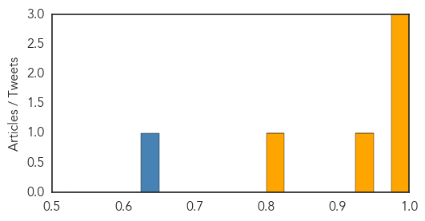
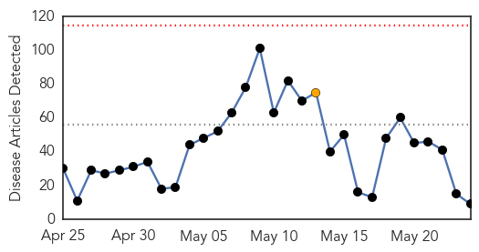
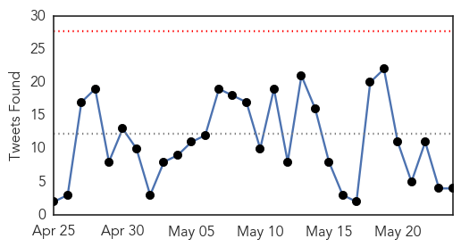
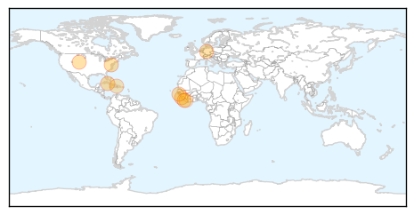

MERS
30-Day Web Trend
4 alerts, 1 warnings

30-Day Twitter Trend
5 alerts, 0 warnings

Article Locations

Article Confidences
Top Articles:
- 0.999
- Middle East respiratory syndrome coronavirus (MERS-CoV) – Republic of Korea
- 0.998
- Middle East respiratory syndrome coronavirus (MERS-CoV) – United Arab Emirates
- 0.998
- DH closely monitors 14 additional MERS cases
- 0.927
- Man detected with MERS-CoV in UAE had travelled to Ibri on May 6
- 0.800
- Al-Falih: MERS checked
Top Tweets:
- 0.630
- Avian Flu Diary: WHO MERS-CoV Update – Saudi Arabia http://t.co/8tAGETBJgU
Ebola
30-Day Web Trend
0 alerts, 1 warnings

30-Day Twitter Trend
0 alerts, 0 warnings

Article Locations
Article Confidences

Top Articles:
- 0.999
- Liberia declared free of Ebola
- 0.999
- Sierra Leone makes progress in recovery from ebola crisis
- 0.997
- Colorado researchers fighting to get ahead of the next Ebola outbreak
- 0.992
- World effort wiping out killer diseases
- 0.986
- All Cuban medical workers return home from W Africa after Ebola fight
- 0.986
- We Owe You a Debt of Gratitude, President Sirleaf Tells AU-ASEOWA Medical Team & Volunteers
- 0.954
- Four more Portuguese Ebola specialists head for Guinea-Bissau
- 0.828
- Tracking the Aid Money: Mission Impossible
- 0.603
- TLC Africa
Top Tweets:
- 0.781
- From an Ebola survivor to an Ebola fighter - Deutsche Welle http://t.co/P8NWycF46V ebola EVD
- 0.670
- Byram soldier returns from Ebola front in Liberia - Daily Record http://t.co/EiNztdRo9q ebola EVD
- 0.611
- How can technology play a role in preventing the spread of diseases like Ebola?
- 0.593
- Ebola-free Liberia can hold internationals - Sky News Australia http://t.co/t63UWMpikn ebola EVD